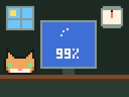
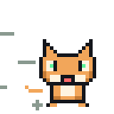

Сезон 2 Месяц 2 · Урок 6 · Процессорск
Что бывает после кнопки: POST, BIOS, UEFI
Компьютер собран. Но между нажатием кнопки и рабочим столом проходит целая жизнь, и управляет ею программа в микросхеме на плате. Сегодня учимся её понимать и настраивать: порядок загрузки, защита Secure Boot и TPM, разгон, пробуждение по сети и обновление BIOS без риска.
Подчёркнутые пунктиром слова можно нажать: появится объяснение. Все слова курса собраны в словарике.
- Серия
- Разминка
- От кнопки до Windows
- Игра 1
- Защита
- Игра 2
- Настройки
- Игра 3
- BIOS вживую
- Обновление
- Босс
- Дома
Мем недели
Жму F2, чтобы зайти в BIOS
Windows уже загрузилась. Быстрая загрузка: «Я тоже часть системы»
Вопрос на разогрев. Ты нажал кнопку питания. Через сколько секунд появляется логотип Windows и что компьютер успевает сделать до этого? Запиши свою цепочку из 3–5 шагов, сравнишь после первого блока.
От кнопки до Windows
Windows не запускается сама. Сначала просыпается маленькая программа, записанная прямо в микросхему на материнской плате. Она называется BIOS, а в современных компьютерах UEFI. Это прошивка платы: она проверяет железо, находит загрузчик системы и передаёт ему управление.
Нажми кнопку и смотри
Нажимай «Дальше» и следи, что происходит внутри.
- КнопкаКнопка корпуса замыкает два контакта на плате (F_PANEL). Плата просит блок питания включиться.
- ПитаниеБлок питания запускается, выравнивает напряжения и посылает сигнал «Power Good»: «ток стабильный, можно работать». До этого процессор ждёт.
- ПрошивкаПроцессор просыпается и читает первую команду не с диска, а из микросхемы BIOS на плате. Это и есть UEFI.
- POSTСамопроверка: процессор, память (на DDR5 первый раз её «тренируют» до минуты), видеокарта, клавиатура, диски. Ошибку покажут лампочки Debug LED или писк.
- Поиск загрузчикаПлата берёт порядок загрузки и пробует устройства сверху вниз: NVMe, флешка, сеть. Первое, где нашёлся загрузчик, побеждает.
- Secure BootЕсли защита включена, плата проверяет цифровую подпись загрузчика. Подпись не сходится: дальше не пускает.
- ЗагрузчикWindows Boot Manager загружает ядро Windows. С этого момента главная уже не плата, а операционная система.
- WindowsДрайверы, службы, экран входа. Всё, прошло 5–20 секунд.
BIOS и UEFI: старый и новый
BIOS придумали в 1981 году. Он умел мало: текстовый синий экран, только клавиатура, диски до 2 ТБ. В 2010-х его заменил UEFI: графика и мышь, огромные диски, защита Secure Boot, загрузка за пару секунд. Сейчас почти везде UEFI, но по привычке все говорят «зайти в BIOS». Так и будем говорить.
| Старый BIOS (Legacy) | UEFI | |
|---|---|---|
| Вид | Синий текст, только клавиатура | Графика, мышь, вкладки, поиск |
| Диски | Разметка MBR, до 2 ТБ | Разметка GPT, практически без предела |
| Защита | Нет | Secure Boot, работа с TPM |
| Загрузка с NVMe | Нет | Да |
| Windows 11 | Не запустится | Нужен обязательно |
Где он живёт: в маленькой микросхеме флеш-памяти на плате, обычно 16–32 МБ. Настройки (порядок загрузки, время) хранятся отдельно и держатся благодаря круглой батарейке CMOS. Если сбиваются дата и время после выключения из розетки, батарейка села.
Как попасть в BIOS
Сразу после включения жми клавишу Setup, лучше несколько раз подряд, пока горит логотип. А клавиша Boot Menu открывает меню, где один раз выбирают, с чего загрузиться. Это разные вещи: Setup меняет настройки, Boot Menu ничего не меняет.
| Производитель | Setup (настройки) | Boot Menu |
|---|---|---|
| ASUS | Delete или F2 | F8 |
| MSI | Delete | F11 |
| Gigabyte | Delete | F12 |
| ASRock | F2 или Delete | F11 |
| Ноутбуки Lenovo | F2 (или кнопка Novo) | F12 |
| Ноутбуки HP | Esc, потом F10 | Esc, потом F9 |
| Ноутбуки Dell, Acer | F2 | F12 |
Не успеваешь? Включена быстрая загрузка, и окно для клавиши почти исчезло. Есть способ из самой Windows: Параметры → Система → Восстановление → Особые варианты загрузки → Перезагрузить сейчас, затем «Поиск и устранение неисправностей» → «Дополнительные параметры» → «Параметры встроенного ПО UEFI». Компьютер перезагрузится сразу в BIOS.
Порядок загрузки
Порядок загрузки (Boot order, Boot priority) это список устройств. Плата проверяет их сверху вниз и запускает первое, на котором нашёлся загрузчик. Пустой диск, диск с фотографиями или флешка с музыкой пропускаются: загрузчика на них нет.
- Ставишь Windows: флешка с установщиком должна оказаться раньше пустого диска. Проще всего выбрать её один раз через Boot Menu.
- Установил: первым должен идти диск с Windows Boot Manager. Иначе забытая флешка снова запустит установку.
- В списке бывает строка «UEFI: флешка» и просто «флешка». Первая запускает её в режиме UEFI, вторая в старом режиме Legacy. Для Windows 11 нужна строка с UEFI.
CSM и Legacy: режим совместимости
CSM это режим, в котором UEFI притворяется старым BIOS, чтобы запустить совсем старые системы и флешки (Legacy). Сейчас он почти не нужен. Пока CSM включён, не работает Secure Boot, а значит, и Windows 11 не будет довольна. Правило: CSM выключен, если нет особой причины.
Загрузка с NVMe и PCIe
Быстрый NVMe SSD подключён к линиям PCIe, как видеокарта. Чтобы с него загрузиться, прошивке платы нужно уметь с ним работать. Все платы UEFI последних лет это умеют, и диск появляется в списке как «Windows Boot Manager (название SSD)».
Если NVMe не виден в списке загрузки, проверь: режим UEFI без CSM, диск в правильном слоте M.2 (помнишь про общие линии из урока 5), на диске действительно стоит система. А ещё NVMe можно вставить в слот PCIe через переходник: Windows его увидит, но загрузиться с него старая плата может и не суметь.
Почему старый компьютер видит NVMe в Windows, но не может с него загрузиться, и как это обходят. Что такое PCIe bifurcation и зачем она нужна, если вставить четыре SSD в один слот.
Поставил Windows, перезагрузил

Флешка в порту: «Начинаем установку Windows!»
Бит Байт
Компьютер «не видит флешку»? Сначала три вопроса: она в списке загрузки? Она UEFI или Legacy? Включён ли CSM? В девяти случаях из десяти ответ здесь.
Глубже: кто запускает процессор раньше BIOS
Даже UEFI не первый. Раньше него просыпается маленький защищённый процессор внутри основного (у AMD это PSP, у Intel ME). Он проверяет, что прошивка платы настоящая, и только потом разрешает основным ядрам начать работу. Вся эта цепочка доверия и называется «загрузка»: каждый следующий шаг проверяет предыдущий.
Защита: Secure Boot и TPM
Самые опасные вирусы те, что запускаются раньше Windows. Их называют буткитами: антивирус ещё не проснулся, а вирус уже работает. Против них в UEFI две защиты: охранник у ворот (Secure Boot) и сейф (TPM).
Цифровая подпись
Цифровая подпись похожа на печать на документе, только её проверяет математика. У производителя есть секретный ключ, которым он ставит подпись, а у всех остальных открытый ключ, которым её проверяют. Подделать подпись без секретного ключа нельзя. А если изменить в подписанном файле хоть один байт, подпись перестаёт сходиться.
Secure Boot: охранник у ворот
Secure Boot проверяет подпись каждого загрузчика и драйвера, который UEFI собирается запустить. Внутри платы для этого две базы (db и dbx):
- db: кому доверяем. Ключи Microsoft, производителей видеокарт, можно добавить и свой.
- dbx: чёрный список. Старые загрузчики, в которых нашли дыру. Даже с настоящей подписью они не пройдут.
Linux с Secure Boot дружит: Ubuntu, Fedora и многие другие загружаются через маленький загрузчик shim, подписанный Microsoft. Отключать Secure Boot приходится редко, например для старых систем или некоторых флешек-мультизагрузчиков. Отключил ради дела, включи обратно.
Проверить, включён ли он, можно без BIOS: Win + R, msinfo32, строка «Состояние безопасной загрузки».
TPM: сейф для ключей
TPM (Trusted Platform Module) это маленький защищённый чип-сейф. Раньше его ставили отдельной микросхемой, теперь он чаще встроен прямо в процессор: у AMD называется fTPM, у Intel PTT. Что он умеет:
- Хранить ключи так, что их нельзя вынуть наружу: TPM сам делает с ними всё, что нужно.
- Запоминать, как шла загрузка: прошивка, загрузчик, настройки. И выдавать ключ, только если всё совпало с прошлым разом.
- Держать ключ BitLocker (шифрование диска) и PIN Windows Hello.
Поэтому если вынуть зашифрованный диск и вставить в другой компьютер, его не прочитать. И поэтому перед обновлением BIOS BitLocker приостанавливают: прошивка станет другой, и TPM откажется выдавать ключ. Windows попросит ключ восстановления из 48 цифр. Где он хранится, узнай дома: часто в учётной записи Microsoft.
Windows 11 требует три вещи: UEFI, Secure Boot и TPM 2.0. Проверить TPM: Win + R, tpm.msc.
Как именно TPM «измеряет» загрузку: что такое регистры PCR и почему смена одной настройки в BIOS может заставить Windows спросить ключ восстановления.
Пароль на BIOS
В UEFI можно поставить пароль на вход в настройки. В школах и офисах так делают, чтобы никто не поменял порядок загрузки и не загрузился с чужой флешки. Дома не ставь его без нужды: забудешь, и на настольном ПК поможет только сброс батарейкой, а на ноутбуке иногда только сервис.
Бит Байт
Secure Boot проверяет, кто пришёл. TPM проверяет, как ты пришёл. Вместе они как охранник и сейф, который откроется только своему.
Глубже: почему Microsoft подписывает Linux
Почти все компьютеры продаются с ключом Microsoft в db. Если бы Linux подписывали другим ключом, его пришлось бы добавлять вручную на каждом компьютере. Поэтому Microsoft за небольшую плату подписывает shim для разных дистрибутивов. А shim уже проверяет загрузчик Linux своим ключом. Цепочка доверия не рвётся.
Полезные настройки и разгон
В BIOS сотни строк, но нужны из них десятка два. Главное правило: одно изменение за раз и фото экрана до изменений. Если что-то пошло не так, всегда есть кнопка «Load Optimized Defaults» (обычно F5 или F9) и Clear CMOS на плате.
Что можно трогать дома
| Настройка | Что даёт | Можно? |
|---|---|---|
| XMP / EXPO | Память работает на паспортной частоте: +5–15 % в играх | Да |
| Порядок загрузки | Компьютер загружается с нужного диска | Да |
| Профиль вентиляторов | Тише или холоднее | Да, но не 0 % |
| Виртуализация SVM / VT-x | Работают эмуляторы Android, VirtualBox, WSL | Да |
| Resizable BAR | Немного FPS в некоторых играх | Да |
| Подсветка RGB, дата и время | Красота и правильные часы | Да |
| Wake-on-LAN, поведение после пропадания света | Компьютер включается по сети или сам после отключения электричества | Да |
| CSM, Secure Boot, Fast Boot | Совместимость и скорость старта | Со взрослыми и с пониманием |
| PBO, андервольт | Чуть быстрее или холоднее | Со взрослыми, со стресс-тестом |
| Напряжения и частоты вручную | Разгон | Только с учителем |
| Обновление BIOS | Новые процессоры, исправления | Только по плану из блока 4 |
Разгон: честно о скорости
Разгон это работа детали на частоте выше заводской. Процессор с частотой 5,2 ГГц вместо 4,6 ГГц выполняет больше тактов в секунду, значит, работает быстрее. Но бесплатно ничего не бывает:
- Чем выше частота, тем больше нужно напряжения, иначе процессор ошибается и падает в синий экран.
- Тепло растёт примерно как квадрат напряжения: +10 % вольт дают около +20 % тепла. Нужен хороший кулер.
- Слишком большое напряжение медленно портит процессор (деградация). Через год он может перестать держать даже заводскую частоту.
- Разгон часто лишает гарантии, а у ноутбуков его обычно просто нет.
Как разгоняют правильно: маленький шаг частоты, стресс-тест 10–30 минут, смотрим температуру. Упал: чуть добавить напряжения или вернуть частоту. Стабильно: следующий шаг. И так до предела, который выдерживает кулер.
Современные процессоры и так разгоняются сами (Turbo Boost, Precision Boost), пока хватает охлаждения. Поэтому лучший «разгон» сегодня часто наоборот: андервольт. Чуть меньше напряжения при той же частоте, и процессор холоднее, тише и даже быстрее, потому что дольше держит турбо.
Почему у одинаковых процессоров разный «потолок» разгона (кремниевая лотерея). Как читать график стресс-теста и как не перепутать перегрев с нехваткой напряжения.
Wake-on-LAN: включить компьютер с телефона
Выключенный компьютер на самом деле не совсем выключен: блок питания в розетке даёт немного тока плате, и сетевая карта может «слушать» сеть. Когда она получает волшебный пакет (Magic Packet) со своим MAC-адресом, она будит компьютер. Это и есть Wake-on-LAN.
- В BIOS включить Wake on LAN (у разных плат называется «Power On By PCI-E», «Resume by LAN»).
- Выключить ErP: этот режим экономии гасит в выключенном компьютере всё, включая сетевую карту.
- Компьютер подключён к роутеру кабелем: по Wi-Fi пробуждение почти никогда не работает.
- В Windows в свойствах сетевой карты разрешить ей будить компьютер.
- С телефона в той же сети отправить пакет приложением Wake On LAN.
Рядом живёт полезная настройка «Restore on AC Power Loss»: что делать, когда свет вернулся. «Power On» включит компьютер сам. Удобно для домашнего сервера с фильмами или для компьютера, к которому подключаешься удалённо.
Как вернуть всё назад
- F5 / F9 «Load Optimized Defaults» в BIOS: заводские настройки.
- Clear CMOS: кнопка или перемычка на плате. Если компьютер даже не доходит до BIOS.
- Вынуть батарейку CMOS на пару минут (компьютер выключен из розетки). Старый, но надёжный способ.
Разогнал процессор на 6 ГГц
Стресс-тест: 3 секунды. Синий экран: навсегда в сердце

Бит Байт
Включить EXPO это не хакерство, а прочитать паспорт планки. Вот с ручными вольтами уже по-взрослому: шаг, тест, градусник.
Настраиваем настоящий компьютер
Компьютер, который класс собрал на прошлом уроке, ждёт настройки. Работаем командой, роли меняются по сигналу учителя: один за клавиатурой, штурман читает задание, контролёр сверяет с фото «до», летописец снимает экран телефоном.
- Перед любым изменением фото экрана. Это наша кнопка «отменить».
- Меняем одну вещь, сохраняем F10, проверяем. Потом следующую.
- Напряжения и частоты процессора руками не трогаем. Обновление BIOS делает учитель.
Задания в BIOS
Галочки сохраняются на этом устройстве. Можно распечатать.
Если компьютер после изменений не стартует, не паникуйте: Clear CMOS, и всё вернётся. Это тоже часть урока.
Обновление BIOS: как не превратить плату в кирпич
Производители выпускают новые версии прошивки годами. В них поддержка новых процессоров, исправленные ошибки, закрытые дыры в безопасности, лучшая совместимость памяти. Но обновление BIOS это единственная настройка, после которой при ошибке компьютер может вообще не включиться.
Когда обновлять
- Новый процессор, а плата его не знает (помнишь CPU support list из урока 5).
- В описании новой версии исправлена именно твоя проблема или серьёзная уязвимость.
- Не надо обновлять «просто потому что вышла новая», если всё работает. И не ставь бета-версии без причины.
Где взять правильный файл
Только на официальном сайте производителя платы, на странице своей точной модели. Одна буква меняет всё: B650M, B650 и B650 V2 это три разные платы. У некоторых моделей ещё есть ревизии (REV 1.0, 1.1), и прошивки для них разные. Модель и ревизия написаны на самой плате, на коробке и в msinfo32 («Изготовитель основной платы», «Модель основной платы»). Там же текущая версия BIOS.
Читай описание версии: иногда пишут «сначала обновите до версии такой-то». Перепрыгивать через обязательную промежуточную версию нельзя.
Главная опасность: электричество
⚡ Пока идёт прошивка, питание не должно пропасть ни на долю секунды. Прошивка стирает старую версию и записывает новую прямо в микросхему. Пропало питание на середине: в микросхеме половина старого и половина нового, и плате не с чего стартовать.
- Не обновляй в грозу и когда в доме «мигает» свет.
- Лучше всего через ИБП (бесперебойник): если свет пропадёт, он продержит компьютер на батарее.
- Ноутбук только на зарядке и с батареей больше 50 %. Многие и не начнут без зарядки.
- Предупреди домашних: удлинитель и розетку никто не трогает, флешку никто не вынимает.
- Никогда не выключай компьютер во время прошивки, даже если кажется, что всё зависло. Проверка может идти несколько минут. Жди, пока утилита сама скажет «готово».
Как обновляют
- Фото или запись своих настроек BIOS: после обновления они почти всегда сбрасываются.
- Разгон вернуть к заводским настройкам. Если включён BitLocker, приостановить его в Windows.
- Флешка в формате FAT32, файл прошивки распакован в корень.
- Зайти в BIOS и запустить встроенную утилиту: EZ Flash у ASUS, M-Flash у MSI, Q-Flash у Gigabyte, Instant Flash у ASRock. Выбрать файл.
- Ждать. Компьютер может перезагрузиться несколько раз сам.
- После обновления: Load Optimized Defaults, потом заново включить XMP/EXPO, порядок загрузки и остальное по фото.
Бывают утилиты обновления из Windows. Ими тоже можно, но встроенная утилита BIOS надёжнее: в момент прошивки не работает ничего лишнего.
Если всё-таки не повезло: два BIOS и Flashback
Производители знают, что свет иногда гаснет, поэтому на многих платах есть план спасения:
| Спасение | Как работает | Где бывает |
|---|---|---|
| Dual BIOS | На плате две микросхемы: основная и резервная. Испортилась основная, плата загрузится с резервной и перепишет основную. На некоторых платах есть переключатель BIOS_SW, чтобы выбрать микросхему вручную. | Многие платы Gigabyte (DualBIOS), старшие модели ASUS, MSI и ASRock |
| BIOS Flashback | Кнопка на задней панели и особый USB-порт с рамкой. Флешка с переименованным файлом, компьютер выключен, но в розетке, держишь кнопку 3 секунды, мигает лампочка. Плата прошивается сама, даже без процессора и памяти. | ASUS (BIOS FlashBack), MSI (Flash BIOS Button), Gigabyte (Q-Flash Plus), ASRock (BIOS Flashback) |
| Программатор | Если ничего такого нет, в сервисе прошивку запишут прямо в микросхему специальным устройством. | Любая плата, но нужен мастер |
Flashback спасает и в другой ситуации: новый процессор, а плата слишком старая, чтобы с ним стартовать. Обновить BIOS обычным способом нельзя, он же не запускается. А Flashback процессор не нужен.
Как называть файл для Flashback у разных производителей и почему Windows может «спрятать» лишнее расширение в имени. Как понять по лампочке, что прошивка идёт, а что флешка не подошла.
Бит Байт
Обновление BIOS это как пересадка мозга: делать редко, по плану и чтобы никто не дёргал за провод. Зато если на плате два BIOS, второй мозг всегда в запасе.
Рейтинг, повторение и ДЗ
Рейтинг класса
Очки из четырёх игр урока. Войди под своим ником и PIN-кодом от учителя.
Коротко
- Кнопка → питание → прошивка платы → POST → поиск загрузчика → Secure Boot → загрузчик → Windows.
- BIOS старый, UEFI новый. Говорят «BIOS», имеют в виду UEFI. Настройки держит батарейка CMOS.
- Setup (Delete, F2) меняет настройки, Boot Menu (F8, F11, F12) выбирает загрузку один раз.
- Порядок загрузки: сверху вниз, побеждает первое устройство с загрузчиком.
- CSM нужен только для Legacy. С ним не работает Secure Boot. NVMe грузится в режиме UEFI.
- Secure Boot пускает только подписанные загрузчики (db), чёрный список dbx важнее.
- TPM: сейф для ключей, выдаёт их, если загрузка не изменилась. Перед обновлением BIOS приостанови BitLocker.
- Безопасно трогать: XMP/EXPO, порядок загрузки, вентиляторы (не 0 %), виртуализация, Wake-on-LAN.
- Разгон: шаг, стресс-тест, температура. Тепло растёт как квадрат напряжения.
- Обновление BIOS: точная модель, стабильное питание (ИБП, не в грозу), ничего не выключать. Спасение: Dual BIOS, Flashback, программатор.
Слова урока
Все слова курса в словарике. Повтори эти:
Практика дома
Делай задания вместе со взрослыми и записывай ответы. Смотреть в BIOS можно, менять только то, что отмечено зелёным в таблице третьего блока. Обновлять BIOS дома без взрослых и без плана нельзя.
- Паспорт компьютера. Win + R → msinfo32. Перепиши: изготовитель и модель основной платы, версию BIOS и дату, режим BIOS (UEFI или устаревший), состояние безопасной загрузки. Потом Win + R → tpm.msc: есть ли TPM и какой версии. Нет компьютера: узнай, есть ли у телефона «безопасная загрузка» (подсказка: у Android и iPhone есть своя цепочка доверия).
- Клавиши. Найди, какой клавишей на твоём компьютере открываются Setup и Boot Menu. Проверь на деле, со взрослыми.
- Экскурсия по BIOS. Зайди в BIOS и найди: температуру процессора, частоту памяти, порядок загрузки. Ничего не меняй, выйди без сохранения (Esc → «Discard changes»). Если память работает ниже паспортной частоты, предложи взрослым включить XMP/EXPO.
- Нужно ли обновление? На сайте производителя платы найди свою модель и последнюю версию BIOS. Что в ней исправлено? Есть ли у твоей платы Dual BIOS или Flashback? Не прошивай, только разведка.
- Объясни родителям. Расскажи взрослому за 2 минуты, почему BIOS нельзя обновлять в грозу и что такое Secure Boot. Пусть задаст тебе один вопрос.
- Игры. Пройди все четыре игры урока ещё раз и подними результат в рейтинге.